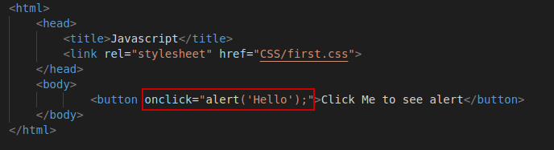

Its a programming language of HTML & the Web
There are 3 ways to attach javascript to html code
1)
Inline JS

Note : We can include internal and external javascript either in <head> part or <body> part
2) Interna JS
3) External JS